Portal-Polish: Vorher / Nachher
Lokaler geprüfter Entwurf. Links: Basis d776dd1. Rechts: aktueller Stand. Jeder Direktvergleich ist eine einzelne Bilddatei. Die ursprünglichen Assets bleiben erhalten.
Rooster-Portraits
Die freigegebenen Spielfiguren sind jetzt auch im Menü erkennbar. Mehr Abstand zeigt Kamm und Ausrüstung; die bisherige Nahaufnahme war zu dominant.
Desktop · Originalgröße öffnen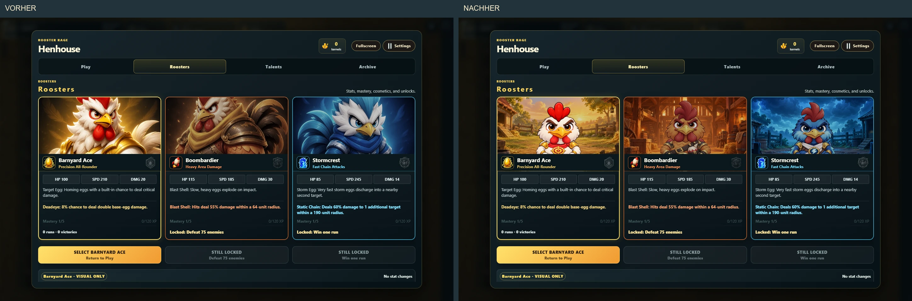
Mobil hochkant · Originalgröße öffnen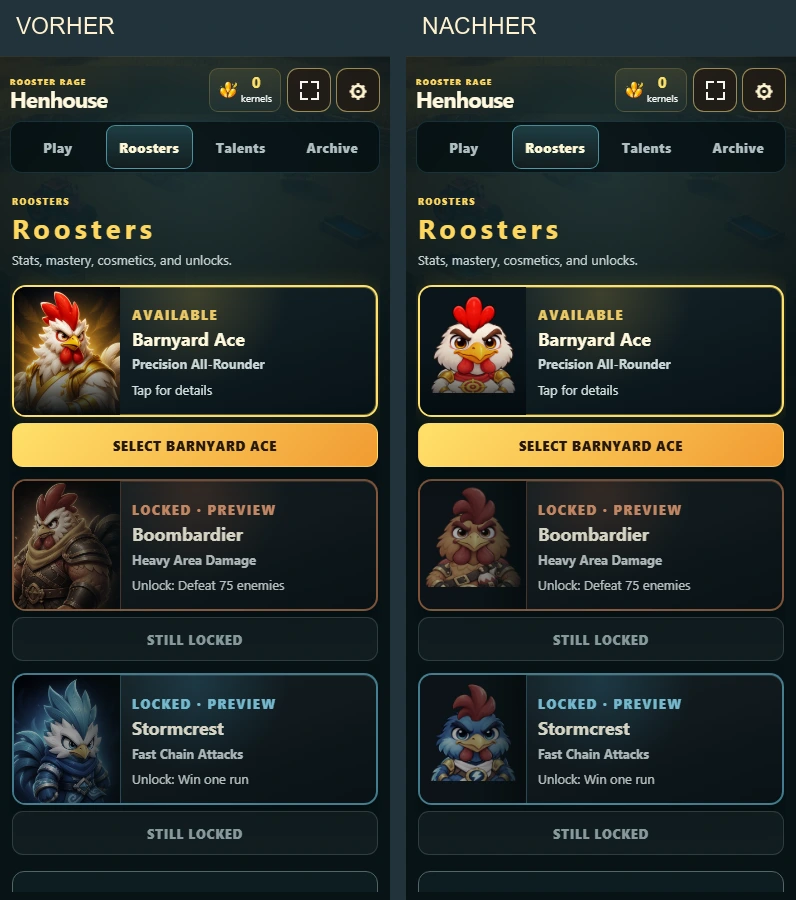
Kleine Welt-Pickups
44 statt 63 Welteinheiten, ohne weißen Sticker-Rand. Sanftes Schweben und Bodenschatten statt dauerndem Drehen: Die Symbole bleiben erkennbar.
Desktop · Originalgröße öffnen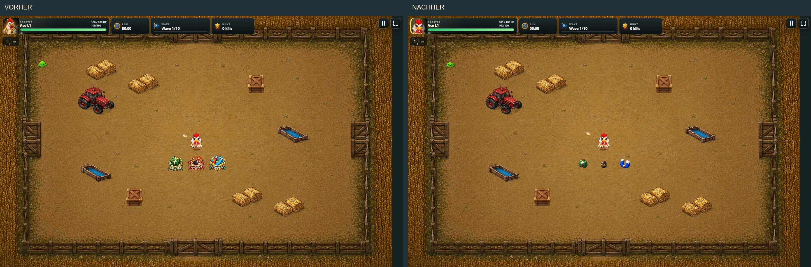
Mobil hochkant · Originalgröße öffnen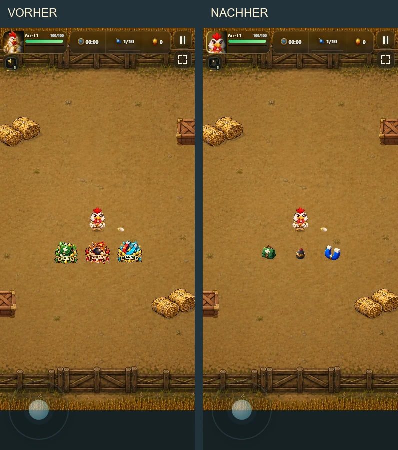
Erstes Elite-Muster
Die Turbo-Gans passt besser zum Humor und hat eine eigene Silhouette. Die goldene Champion-Variante ist allein noch keine ausreichende Elite-Vielfalt. Zwei weitere eigenständige Typen bleiben offen.
Desktop · Originalgröße öffnen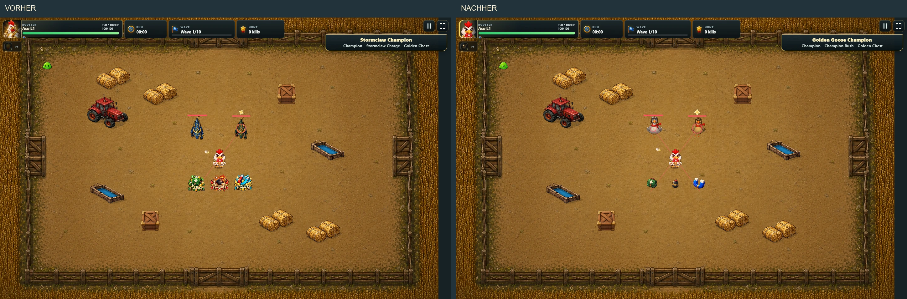
Mobil hochkant · Originalgröße öffnen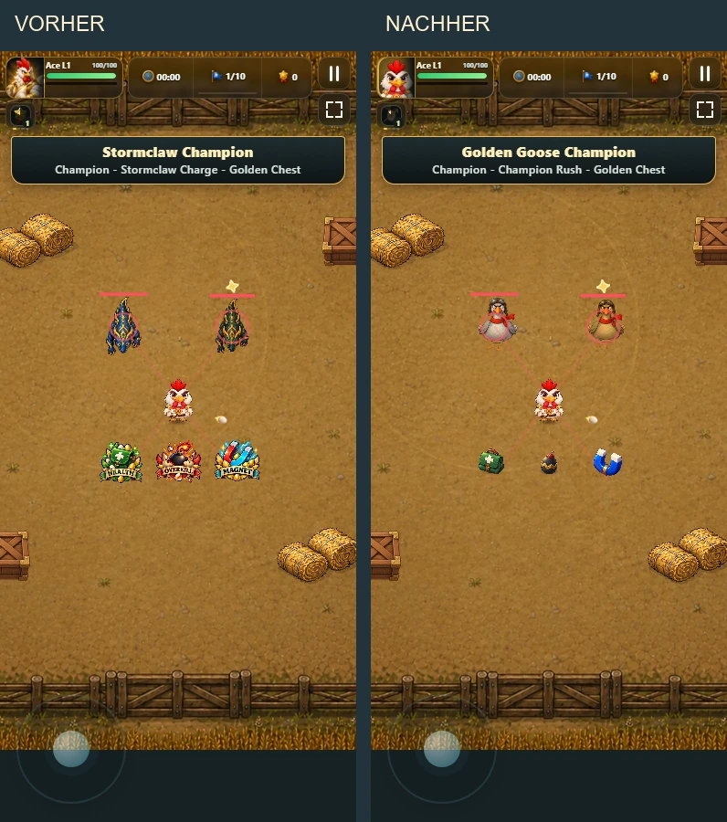
Isolierte Laufanimation, gleiche Frame-Größe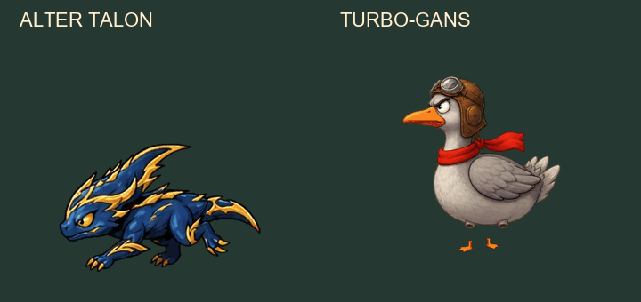
Eindeutige Upgrade-Icons
Krit, Abprallen, Rückstoß und Wiederbelebung haben eigene Symbole. Auch die drei Primärwaffen bekommen getrennte Icons. Der bestehende Atlas bleibt für andere Inhalte erhalten.
Desktop · Originalgröße öffnen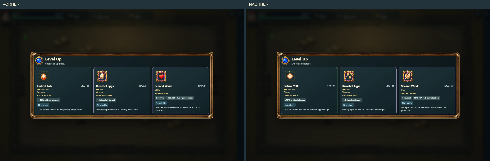
Mobil hochkant · Originalgröße öffnen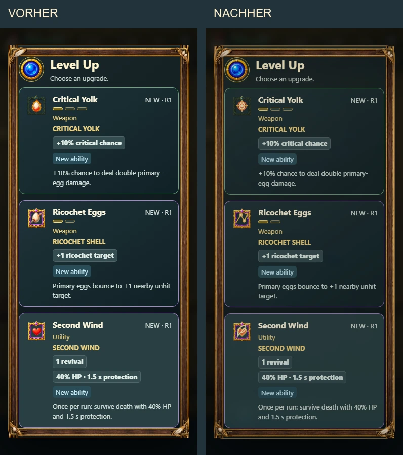
Material statt Universalexplosion
Kisten zerfallen in Holzsplitter, Heu in kurze Halme. Kurze Effekte und ein festes Limit halten Warnzonen lesbar. Kein zusätzlicher AOE-Schaden.
Desktop · Originalgröße öffnen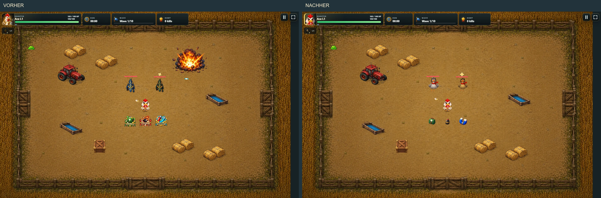
Mobil hochkant · Originalgröße öffnen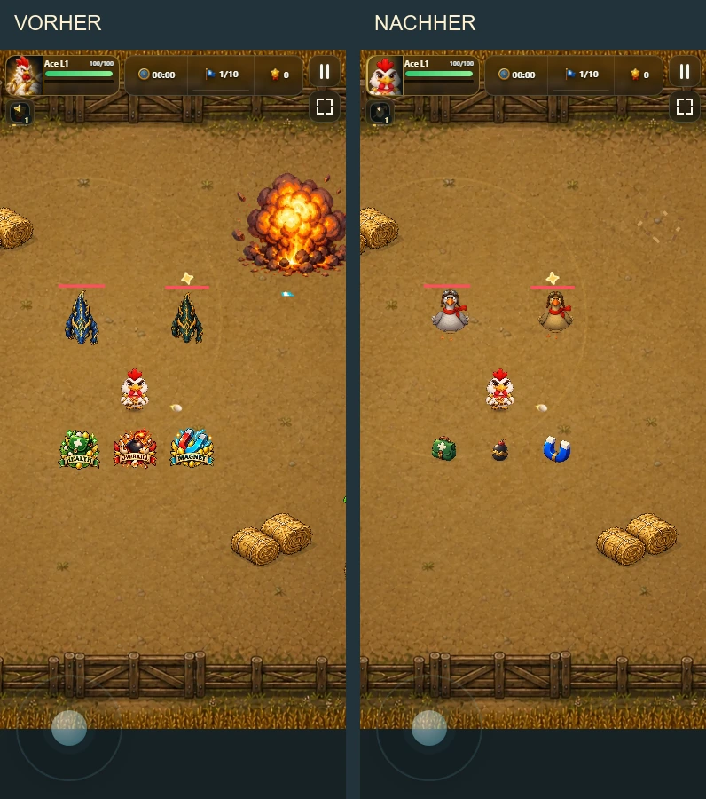
Belohnungen
Truhenfarben unterscheiden die Herkunft des Rewards. Die Öffnung dauert 520 statt 760 ms und läuft über das zentrale Pausesystem. Keine zusätzliche Vergabe und keine neue Währung.
Desktop · Originalgröße öffnen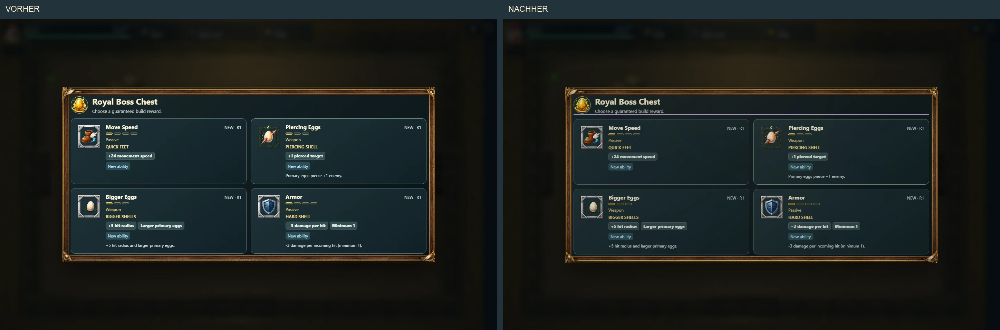
Mobil hochkant · Originalgröße öffnen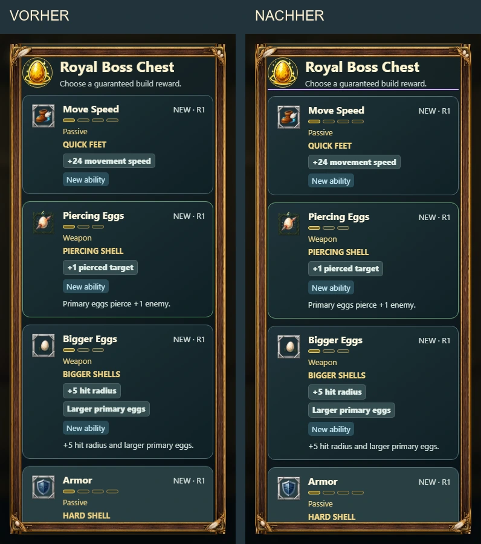
Ergebnis und Fortschritt
Kernels und neue Freischaltungen zuerst; Build danach, Kampfdaten einklappbar. Die Rückkehraktion bleibt erreichbar. Das Bild verwendet in beiden Versionen denselben QA-Beispielbericht.
Desktop · Originalgröße öffnen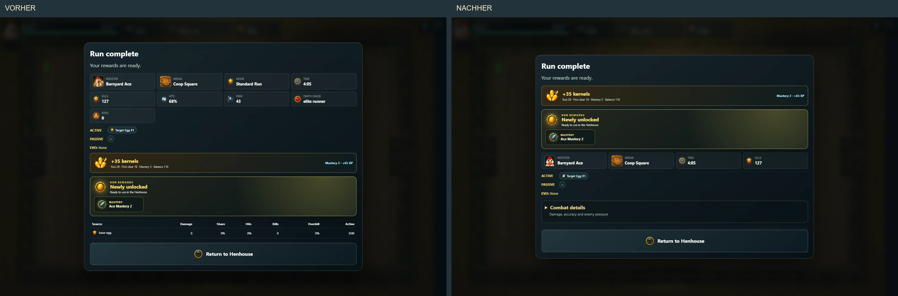
Mobil hochkant · Originalgröße öffnen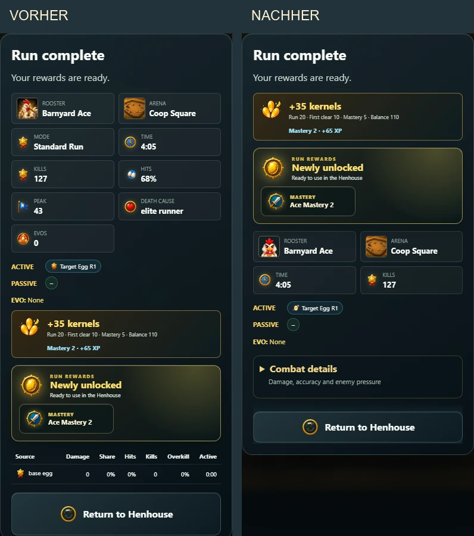
Offen: Elite-Vielfalt, echtes Mobilgeräte-/Erstspielerfeedback, optionale AOE-/Combo-Experimente. Keine pauschale Release-Freigabe. Umsetzungsplan